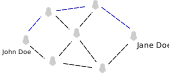

(and by design is hard to provide Internet on a MANET)
And what about AODVv2?
Not the same as the original AODV (it's IPv4 only)
Finds routes by flooding "Route Requests"
Once a route is found a "Route Response" is sent to the node that asked about the route
We ask for a route only when we need it
When multiple "Route Response" arrive, we select the one with the less hops to the destination
Built on top of RFC 5444
Taking a look at the routing
John wants to send a message to Jane
John proceeds to flood Route Requests
All nodes participate by re-sending the request, and verifying wether
it isn't a duplicate request.
Jane once finding this Request, gives a Response to John

Okay... but how does this work with RIOT?
Each network interface (gnrc_netif_t) on RIOT provides a callback for providing routing information
gnrc_netif_t::route_info_cb
It informs us when the GNRC IPv6 stack doesn't have a valid route to a destination
Along with informing the need of a route, also provides the packet that is going to be sent for us to "buffer" it and send it later when the route is found
How IPv6 addresses are used?
Each node generates a random unique address, saved for later usage
All addresses use a fc00::/16 prefix or in other words an Unique Local Address
Unique Local Address aren't routable on the public Internet
These addresses however can be routed on a private network.
In general terms it's sort of (with exceptions) equivalent to the IPv4 private address range (192.168.0.0/16)
Security challenges for the future
Security on a public network is somewhat difficult
Jamming is an issue on the radiospace, even interference could be problematic
Impersonation attacks are possible, althought can be solved using cryptgraphy (e.g.: generating an address out of an ECC public key, and incorporate validation on the routing protocol)
Validation of AODVv2 messages
And maybe a working prototype?
Yes! Still being worked and details being polished :-)
Finally
Thanks for hearing me, and very much thanks to all of the RIOT Summit 2020 organizers.